A practical guide to the application at http://localhost:4200
Set up your catalog. Track every stock change. Review sales and expenses.
How to use this guide
Follow the setup chapters first, then use the inventory, sales and reporting chapters for daily operations. Each chapter includes screen references. English instructions retain the Greek labels shown in the app.
02
Sign in and find your way
05
Create brands, categories, employees and supplies
08
Build reusable variant templates
10
Create products and set their prices
12
Receive, count and adjust stock
15
Review sales and record expenses
18
Export reports and resolve common issues
PERFUME POS ADMIN · USER TUTORIAL
Sign in & navigate
Start with an administrator account.
http://localhost:4200/login
Open http://localhost:4200 in your browser. If you are signed out, the app takes you to Admin sign in.
Enter your administrator Email and Password, then select Sign in.
Use the left sidebar to open each management screen. Select Sign out in the header when finished.
Use the dashboard for a daily overview
Πίνακας Ελέγχου shows today’s completed sales, order count, average receipt, seven-day sales, low stock and recent orders. Select Ανανέωση to refresh.
Sidebar label
What you do there
Προϊόντα / Παραλλαγές
Products / reusable sale formats
Μάρκες / Κατηγορίες
Brands / product categories
Υπάλληλοι / Αναλώσιμα
Employees / packaging supplies
Απόθεμα / Κινήσεις Αποθέματος
Balances / stock history and entry
Ιστορικό / Αναφορά Πωλήσεων
Order details / sales reports
Έξοδα
Employee expenses
PERFUME POS ADMIN · SCREEN REFERENCE
Sign in
http://localhost:4200/login
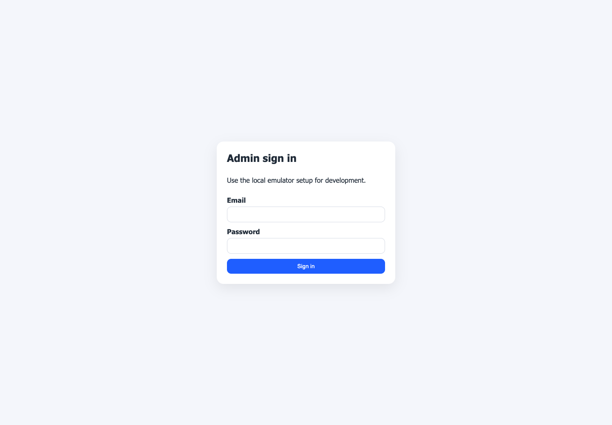
Enter Email and Password, then select Sign in. The left sidebar appears after authentication.
PERFUME POS ADMIN · SCREEN REFERENCE
Daily overview
http://localhost:4200/dashboard
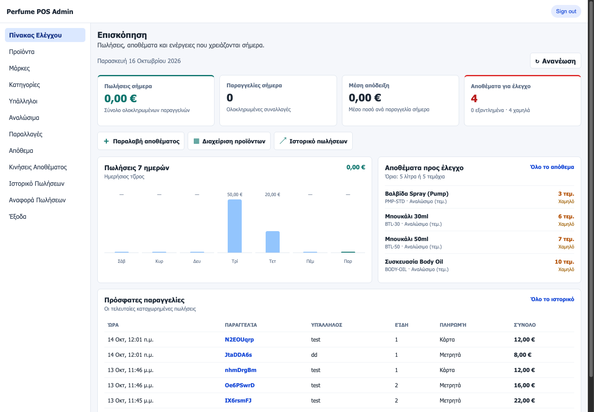
Review today’s sales and low-stock cards at the top. Use the shortcuts to receive stock, manage products or open sales history.
PERFUME POS ADMIN · USER TUTORIAL
Prepare your store
Create the records that products and recipes will use.
1 · Brands and categories
Open Μάρκες (/brands). Enter Όνομα μάρκας, optionally add a code, leave Ενεργή selected and click Δημιουργία μάρκας. Repeat in Κατηγορίες (/categories) using Όνομα κατηγορίας and Δημιουργία κατηγορίας.
At least one active brand and category are needed before creating a product. Use the search field to locate existing records.
2 · Employees
Open Υπάλληλοι (/employees). Enter Όνομα υπαλλήλου and Κωδικός υπαλλήλου, select the active checkbox, then click Δημιουργία υπαλλήλου. The employee code is used to enter the POS.
The same screen has Έγκριση ακύρωσης παραγγελίας: enter and confirm a six-digit manager code, then select Ορισμός κωδικού. The POS requests this code before cancelling a sale.
3 · Packaging supplies
Open Αναλώσιμα (/consumables), then + Νέο Αναλώσιμο.
Enter the supply name, optional code, unit and optional cost price. Keep the active checkbox selected.
Select Δημιουργία Αναλωσίμου. Repeat for bottles, caps or other materials used in your recipes.
Checkpoint
Confirm that the new records appear in their lists and show an active status. Create supplies before building a variant that consumes them.
PERFUME POS ADMIN · SCREEN REFERENCE
Create a brand
http://localhost:4200/brands
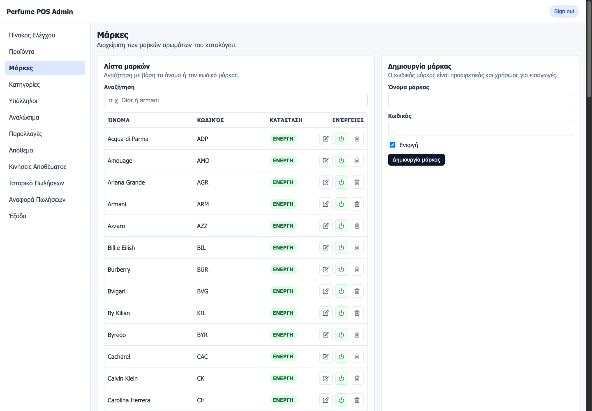
Search existing brands in the list. Use the creation form to enter a name and optional code, and keep the brand active.
PERFUME POS ADMIN · SCREEN REFERENCE
Employees & approvals
http://localhost:4200/employees
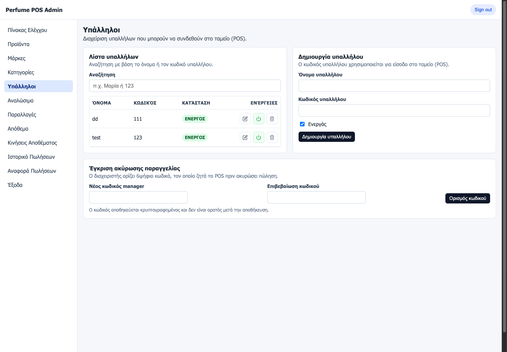
Create employees with a name and POS code. The manager approval code is configured separately on this screen.
PERFUME POS ADMIN · USER TUTORIAL
Build variant templates
A variant defines a sale format, recipe and suggested price.
http://localhost:4200/variants
Choose + Νέα Παραλλαγή. Enter Όνομα Παραλλαγής, optional code, total size and unit.
Choose Τύπος Συσκευασίας: Χύμα (BULK) for a recipe, or Συσκευασμένο (PACKAGED) for a ready-made item.
Enter the selling price and, if relevant, cost price. For BULK, enter base and essence amounts in ml.
For BULK, select the required Αναλώσιμα Συσκευασίας and specify how many of each are consumed.
If offering a special bottle, enable Δυνατότητα Επιλογής Special Μπουκαλιού, select its supply record and set the extra charge.
Keep Ενεργό selected and click Δημιουργία Παραλλαγής.
Worked example · 30 ml refill
Field
Training value
Name / size / unit
Demo 30 ml / 30 / ml
Packaging
BULK
Base / essence
25 ml / 5 ml
Packaging supply
1 × 30 ml bottle
Suggested selling price
€10.00
Checkpoint
Return to the variants list. Search by name or code and verify the size, packaging, recipe and selling price.
PERFUME POS ADMIN · SCREEN REFERENCE
Reusable sale formats
http://localhost:4200/variants/new
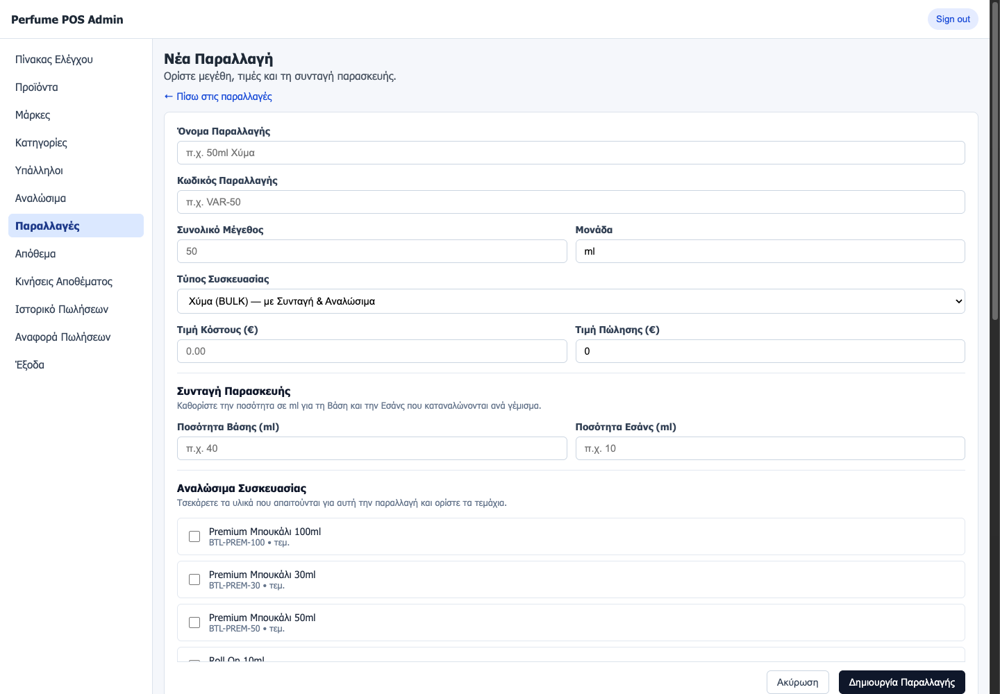
Set size, unit, packaging and price. For BULK formats, configure base, essence and packaging supplies before saving.
PERFUME POS ADMIN · USER TUTORIAL
Create your first product
Attach compatible variants and decide how they appear at checkout.
http://localhost:4200/products/new
Open Προϊόντα and select + Νέο Προϊόν.
Enter Κωδικός Προϊόντος and Όνομα Προϊόντος; select a brand and category.
Set Κατηγορία Συσκευασίας: BULK tracks liquid volume; PACKAGED tracks pieces. Set gender if needed.
Optionally enter Συστατικά (για την ετικέτα). The field allows up to 500 characters and the interface requests uppercase, comma-separated ingredients.
Under Παραλλαγές προϊόντος, select the available formats. Set each selected variant’s Τιμή Πώλησης (€) and optional Τιμή Κόστους (€).
Expand Σειρά εμφάνισης στο POS. Drag the selected variants or use the arrow buttons to order them. The first variant is selected automatically at the POS.
Keep Ενεργό Προϊόν selected and click Δημιουργία προϊόντος.
Find and maintain products
In the product list, search by code, name or brand, or filter by category. Open an existing product’s edit action to update its details and select Αποθήκευση αλλαγών.
Assign a variant to several products
Select product checkboxes in the list. Choose Παραλλαγή προς ανάθεση and click Προσθήκη στα επιλεγμένα. Review the result message and check the affected products.
PERFUME POS ADMIN · SCREEN REFERENCE
Product details & variants
http://localhost:4200/products/new
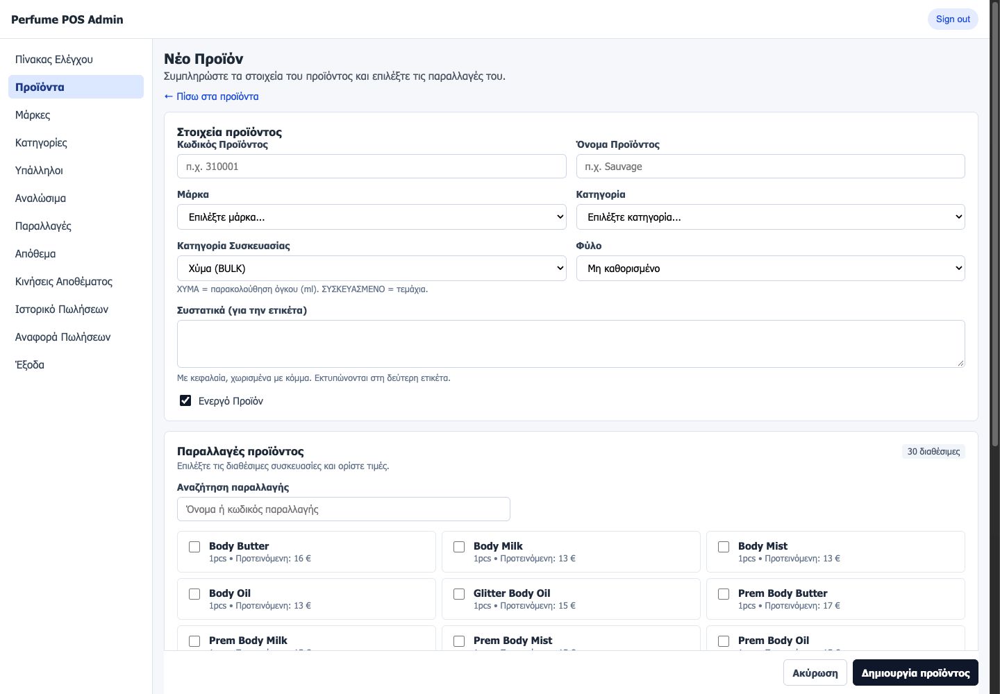
Complete the product details first. Below them, select compatible variants and set prices; the save action appears at the bottom.
PERFUME POS ADMIN · USER TUTORIAL
Receive & correct inventory
Choose the stock mode carefully: the meaning of the number changes.
http://localhost:4200/stock-movements/new
Open Κινήσεις Αποθέματος, then + Νέα κίνηση.
Select the movement mode from the tabs below.
Search by item code or name and choose a suggestion. Use + Επιλογή αναλωσίμων to select packaging supplies. You can include several items.
Enter the quantity for every relevant row. Liquid fields use L; piece fields use τεμ.. Check Τρέχον and the calculated Νέο υπόλοιπο.
Enter Αιτιολογία (reason). It is optional for purchases and required for adjustments or losses. Fix any row errors, then select Καταχώριση.
Mode
What to enter
Example
Παραλαβή Receipt
Quantity received; adds stock
Current 2 L + received 1 L = 3 L
Διόρθωση / Απογραφή Count / adjustment
Actual counted balance
Current 2 L; enter 1.8 L → new 1.8 L
Απώλεια Loss
Quantity lost; subtracts stock
Current 2 L − lost 0.2 L = 1.8 L
Verify the result
Check the saved movement in the history. Use Συναλλαγές for grouped events and Αναλυτικές κινήσεις for individual changes. For an order event, select Προβολή to see stock effects.
Open Απόθεμα (/inventory). Search for the item and confirm the available quantity. Adjust the low-stock thresholds, item type or Μόνο χαμηλό απόθεμα filter to focus your review.
PERFUME POS ADMIN · SCREEN REFERENCE
Choose a stock movement
http://localhost:4200/stock-movements/new
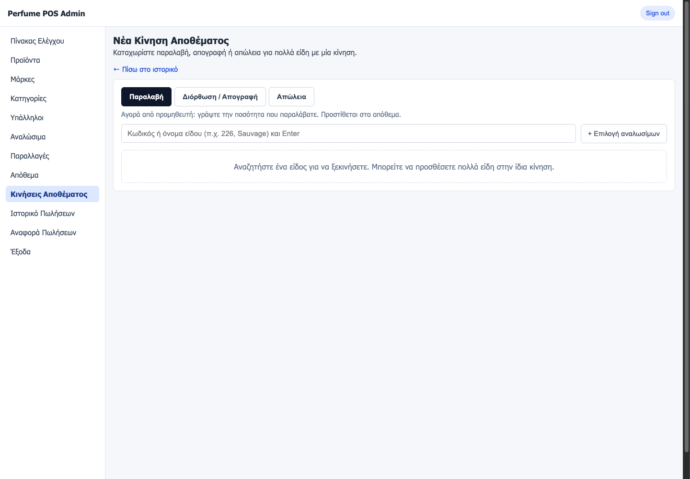
Select receipt, count or loss before searching for an item. After selecting an item, enter quantities and check the calculated balance.
PERFUME POS ADMIN · SCREEN REFERENCE
Check available stock
http://localhost:4200/inventory
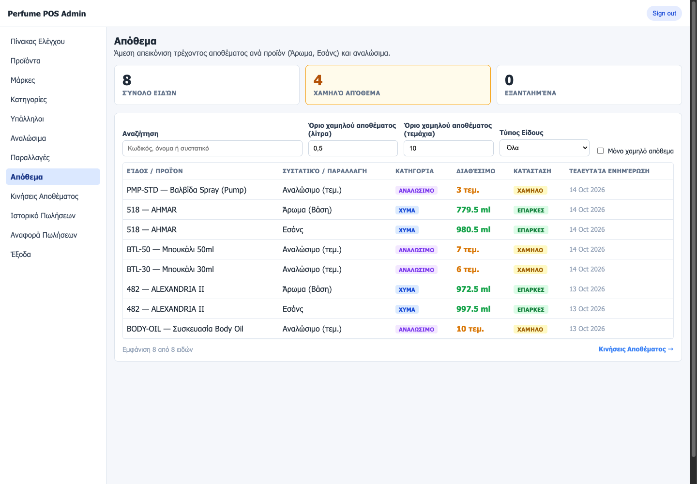
Use search, type and low-stock filters to focus the list. Check the available quantity and unit for each item.
PERFUME POS ADMIN · USER TUTORIAL
Review sales & expenses
Trace orders and keep employee spending visible.
Inspect an order
http://localhost:4200/sales-history
Open Ιστορικό Πωλήσεων. Search by employee name or order ID.
Check the date, employee, item count, total and status: ΟΛΟΚΛΗΡΩΜΕΝΗ means completed; ΑΚΥΡΩΜΕΝΗ means cancelled.
Select Αναλυτικά beside an order. Review each product, variant, quantity, unit price and line total. A special-bottle indication appears when applicable.
Select Απόκρυψη to collapse the details. Use stock movement history when you need to inspect the related inventory changes.
Record an expense
http://localhost:4200/expenses
Open Έξοδα. Select an active Υπάλληλος.
Enter Ποσό (€), choose Μετρητά (cash) or Κάρτα (card), and enter a description.
Select Προσθήκη εξόδου.
Filter by employee and Από / Έως dates, then select Ανανέωση. Confirm the new entry and the total, cash and card summaries.
To change an existing expense, use its edit action, adjust the available fields and select Αποθήκευση. Select Άκυρο to leave the edit.
Daily review
Compare recent orders with the sales history, review unexpected stock movements, record expenses against the appropriate employee, and then generate the report for the same date range.
PERFUME POS ADMIN · SCREEN REFERENCE
Inspect sales
http://localhost:4200/sales-history
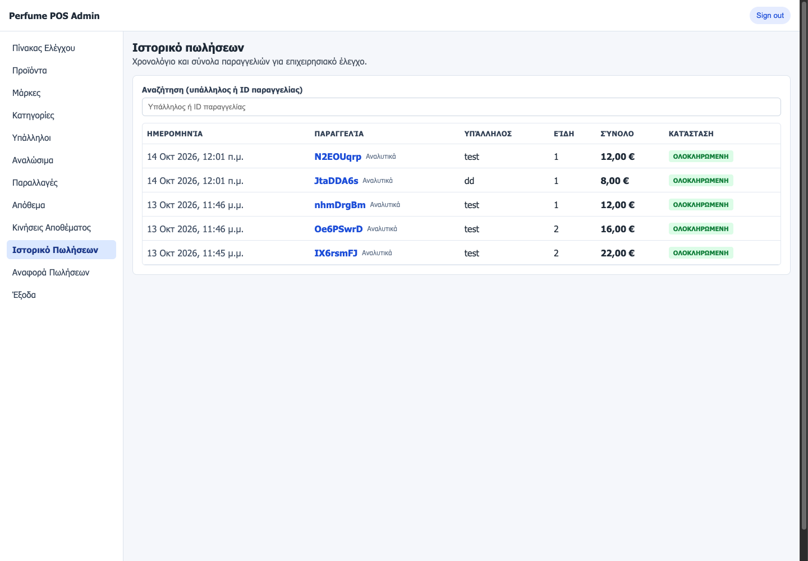
Search by employee or order ID. Select Αναλυτικά beside an order to expand its line items.
PERFUME POS ADMIN · SCREEN REFERENCE
Record employee expenses
http://localhost:4200/expenses
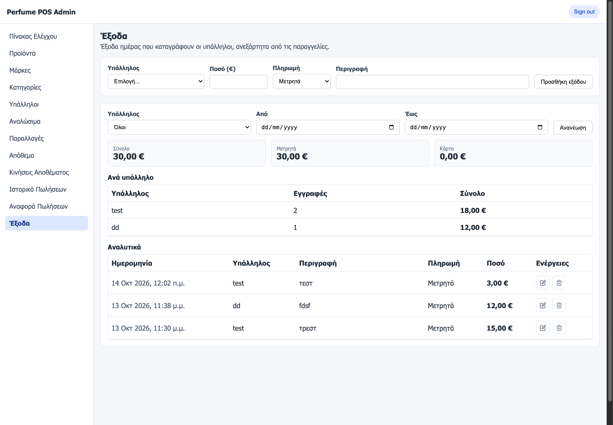
Select an employee, amount, payment method and description. Use the date filters to review totals and existing entries.
PERFUME POS ADMIN · USER TUTORIAL
Reports & quick fixes
Export a sales summary, then close out your session.
http://localhost:4200/sales-report
Open Αναφορά Πωλήσεων. Set Από (from) and Έως (to) for the reporting period.
Review the daily employee rows and Σύνολο ημέρας. Columns separate cash sales, card sales, cash expenses and card expenses.
Select Εκτύπωση / PDF. In your browser’s print dialog, choose Save as PDF and save the report.
For a spreadsheet, select Εξαγωγή CSV. When importing, choose a semicolon separator and the appropriate decimal-comma settings.
Select Sign out when your review is complete.
Common issues
Problem
Next step
localhost:4200 does not open
Ensure the local dashboard server is running on this computer. In the project, run npm start from apps/admin-dashboard with dependencies installed.
Sign-in fails
Check email and password. Ask the administrator to verify the account’s active OWNER profile and store assignment.
Cannot create a product
Create an active brand, category and variant template first. Check required fields and select compatible variants.
No matching variants
Check the product’s packaging type and clear the variant search.
Stock entry cannot submit
Correct flagged rows, check units and provide a reason for adjustment or loss.
List or report appears empty
Clear search and filters; check the date range. Read any loading or connection error shown on screen.
Prepared from the local admin dashboard source on 16 October 2026. Routes, labels and calculations reflect this project version. Example records and amounts are illustrative.
PERFUME POS ADMIN · SCREEN REFERENCE
Export the sales report
http://localhost:4200/sales-report
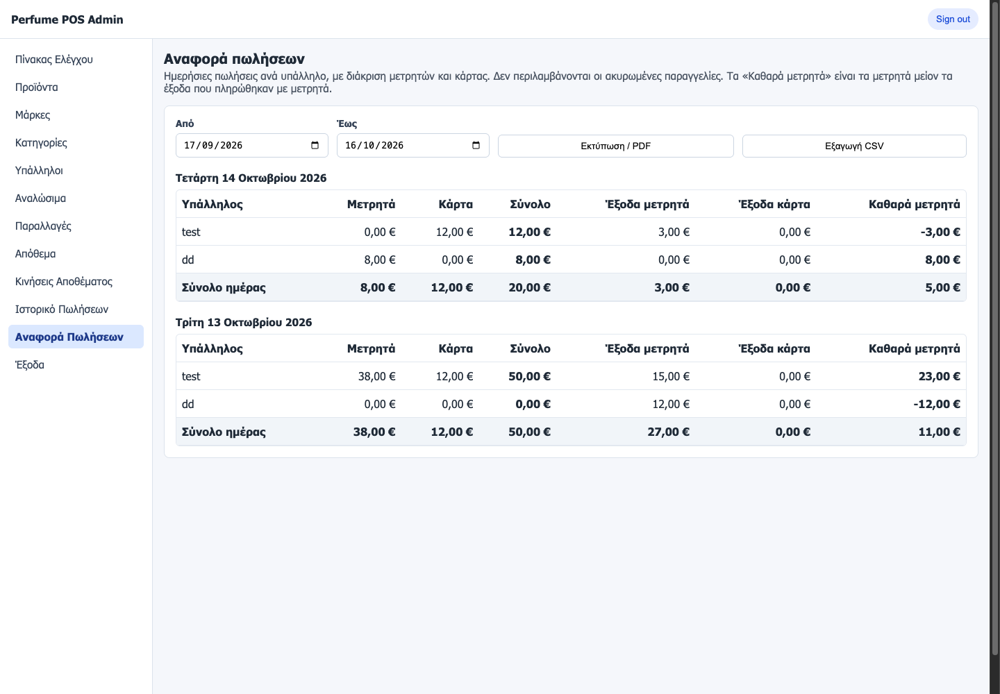
Set the period with Από and Έως. Review the employee and daily totals, then select Εκτύπωση / PDF or Εξαγωγή CSV.